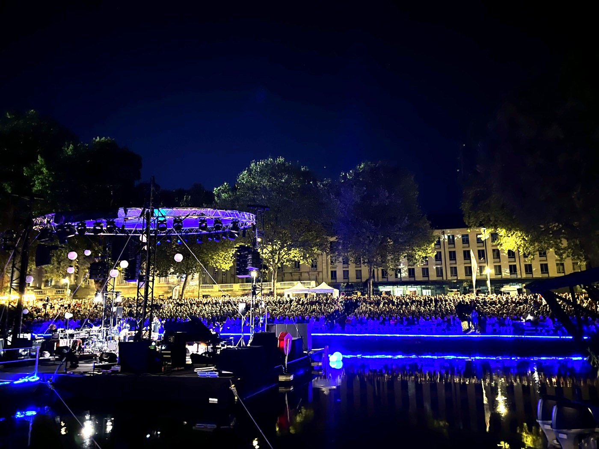

Rendez-vous de l'Erdre Sold out 5,000 seats for Rendez-vous de l'Erdre in Nantes, France through an integrated campaign across online ads, radio, and printed press. 
Snape Maltings Sold out Snape Maltings, an 850-seat venue in a remote location in the UK, through online ads, audience development, and campaign execution.
BBC x London Jazz Festival Worked with the BBC and London Jazz Festival to sell out the venue through audience development and campaign execution.
Jazz a la Villette Sold out Jazz a la Villette in Paris by coordinating radio, TV, and film production support across France TV, France Culture, France 24, Mezzo, and Culturebox.